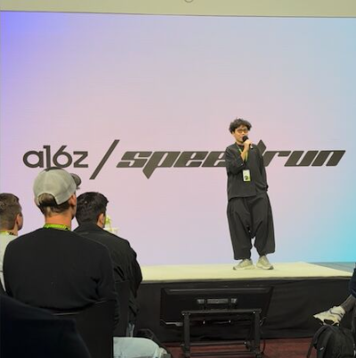

Selamat Pagi.
My name is Yeng, and I'm interested in how symbolic systems shape human behavior. I trained in classical music and performed with Steven Isserlis and the Asian Youth Orchestra. Then, I studied software engineering with Dr. Nicholas Sakellariou before moving to San Francisco to work at GoDaddy Airo. I also published fiction and organized a techno series.
Now, I'm building Lekondo. Fashion is the largest category of e-commerce, yet the best discovery tool is still a friend wearing Ann Demeulemeester. We're fixing that.
Things other people said better than I could: